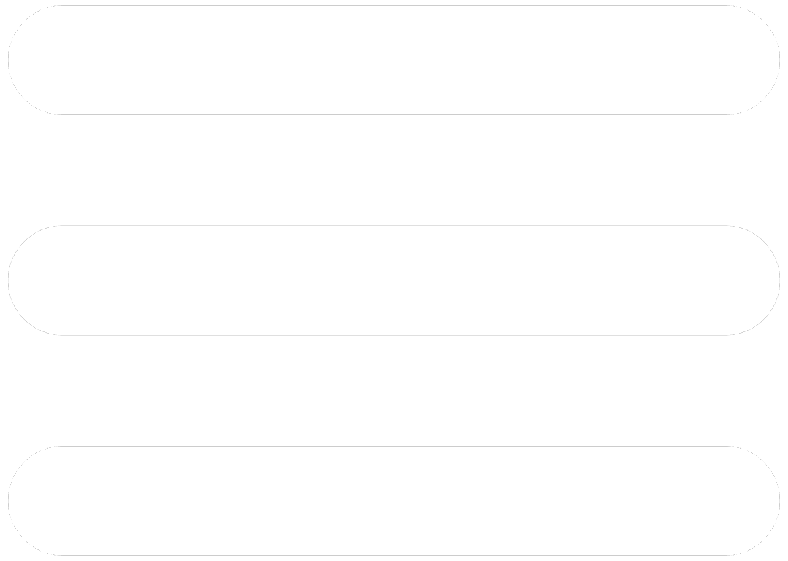

Asteroides
Novidades
observatório da terra
nasa

Asteroides
Novidades
observatório da terra
nasa
Veja os Asteroides Próximos da terra
A partir de informaçoes da NASA
Data de Início:
Data de Fim:
Buscar Dados
Os 10 asteroides mais próximos